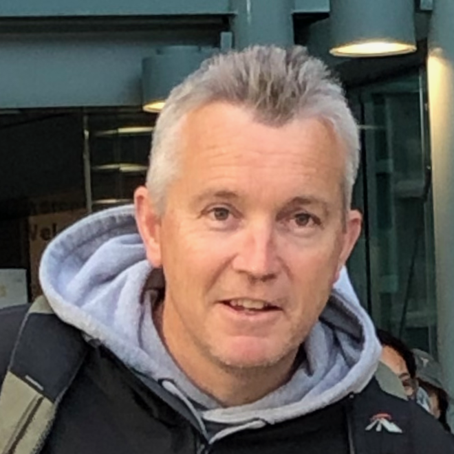

<section class="section">
  <div class="container has-text-left-tablet">
    <h2 class="title is-2 page-title">{{pageTitle}}</h2>
    <div class="columns">
      <div class="column is-three-quarters">
        <p>
          I'm an experienced, motivated person who has recently retrained to follow my ambition of becoming a software/web developer. After a nearly 20 year teaching career, which included the responsibility of leading and integrating the use of IT in the classroom I made the decision to jump with both feet and follow my passion. While still relatively new to front-end web/software development I hold additional skills from previous experiences that give me a great understanding around principles that ensure that what I create is easy to use and that key messages have cut-through based on the way I work to present these.
        </p>
        <br>
        <p>
          I have recently completed a ten week software developer internship at SwipedOn (Tauranga) where I was able to further develop my skills, particularly in using Vue as a front-end framework. I was able to experience being part of a sprint team and enjoyed getting to understand wider aspects of the development process. My recent studies (Post Grad Diploma) focussed heavily on software and web development, mobile app development (using Xamarin Forms) as well as general programming in both C# and JavaScript.
        </p>
        <br>
        <p>
          I am interested in working in front-end development and have basic experience building products using Vue, Angular and React and feel comfortable working with these technologies. Long term I would like to develop the skills required to be considered a 'full-stack' developer, being able to work alongside clients bringing their required digital solutions to life.
        </p>
        <br>
        <p>
          Born and bred in the South Island, I am a family guy who loves spending time with friends and family. As well as having a passion for things related to technology, I am also interested in sports and travel.
        </p>
      </div>
      <div class="column">
        <figure class="image">
          
        </figure>
      </div>
    </div>
    <div class="content">
      <div class="contact-me">
        <a 
          class="button is-info is-medium is-fullwidth" 
          routerLink='/contact'>
          <span class="icon is-medium is-left">
            <fa-icon icon="id-badge"></fa-icon>
          </span>
          <span>CONTACT ME</span>
        </a>
      </div>
    </div>
  </div>

</section>